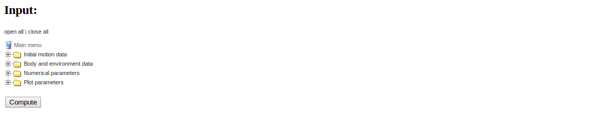

Working with a pool of input parameters
Parampool's main focus is on scientific applications with lots of
input data of different type, organized in a hierarchical tree fashion.
The various input parameters are defined in terms of a pool.
The pool can be defined as a nested list or through a function
application programming interface (known as an API, and here
consisting of calls functionality in the parampool.pool package).
To exemplify the use of pools, we apply the
compute_motion_and_forces function (from
the section More input parameters and results):
def compute_motion_and_forces0(
initial_velocity=5.0,
initial_angle=45.0,
spinrate=50.0,
w=0.0,
m=0.1,
R=0.11,
method='RK4',
dt=None,
plot_simplified_motion=True,
new_plot=True
):
Let us organize the 10 input parameters into four subpools. At the top level we need a subpool, usually called "Main pool" or named after the application. Each subpool is here specified with a logical name of each parameter and the corresponding variable name in the compute function:
- Main pool
- Initial motion data
- Initial velocity:
initial_velocity - Initial angle:
initial_angle - Spinrate:
spinrate - Body and environment data
- Wind velocity:
w - Mass:
m - Radius:
R - Numerical parameters
- Method:
method - Time step:
dt - Plot parameters
- Plot simplified motion:
plot_simplified_motion - New plot:
new_plot
model.py or
models.py for Flask and Django, respectively) where each parameter name
is transformed to a static class variable. Such code requires each
parameter to have a unique name. (Using variable names that merge the
parameter name with its subpool path would solve this problem.)
A pool is a hierarchical tree structure with subpools and data items, where each data item describes an input parameter in the problem. The task now is to make a Python specification of the of subpools and data items in the pool tree.
Specifying a pool as a list
The pool tree can be specified as a list of lists, strings, and dictionaries. Each list represents a subpool, each string the name of the subpool, and each dict is a data item. The pool must be return from some function, hereafter called the pool function. In our case, the pool function goes as follows:
def pool_definition_list():
"""Create and return pool defined through a nested list."""
pool = [
'Main', [
'Initial motion data', [
dict(name='Initial velocity', default=5.0),
dict(name='Initial angle', default=45,
widget='range', minmax=[0,90], range_step=1),
dict(name=r'Spinrate', default=50, widget='float',
unit='1/s'),
],
'Body and environment data', [
dict(name='Wind velocity', default=0.0,
help='Wind velocity in positive x direction.',
minmax=[-50, 50], number_step=0.5,
widget='float', str2type=float),
dict(name='Mass', default=0.1, unit='kg',
validate=lambda data_item, value: value > 0,
help='Mass of body.'),
dict(name='Radius', default=0.11, unit='m',
help='Radius of spherical body.'),
],
'Numerical parameters', [
dict(name='Method', default='RK4',
widget='select',
options=['RK4', 'RK2', 'ForwardEuler'],
help='Numerical solution method.'),
dict(name='Time step', default=None,
widget='textline', unit='s'),
],
'Plot parameters', [
dict(name='Plot simplified motion', default=True,
help='Plot motion without drag+lift forces.'),
dict(name='New plot', default=True,
help='Erase all old curves.'),
],
],
]
from parampool.pool.UI import listtree2Pool
pool = listtree2Pool(pool)
return pool
Actually, the pool function must return a parampool.pool.Pool object,
so after the definition of the pool tree as a list we must make the
shown conversion from a list to a Pool object via the listtree2Pool
function.
Attributes in data items
Each data item has a name and preferably a default value, as in the case of "Initial velocity". More attributes can be added:
-
widgetspecifies the type of widget used in a graphical user interface. Legal values areinteger,float,range(requires theminmaxattribute too),integer_range(requires theminmaxattribute too),textline,textarea(for larger multi-line texts),checkbox(for boolen variables),select(list of options),email,password,file(for a filename of a file to be uploaded,url,hidden(for an invisible field), andtel(for a phone number). If not given,widgetis based on the value of thestr2typeattribute or the type of the default value. -
minmaxis a 2-list or 2-tuple with lower and upper bound in the interval of legal values of a number. - The
range_stepsattribute, valid whenwidgetisrange, specifies the steps in the slider used to select the number. In our example, we can select the "Initial angle" in unit steps between 0 and 90 degrees. -
unitspecifies a unit, e.g.,1/sorkg/m**3. If the input contains another unit, e.g.,4 1/h, the value will be automatically converted to the registered unit (\( 4/3600 \) 1/s if 1/s is the registered unit). (Parampool applies the thePhysicalQuantityobject from the ScientificPython package to perform computations with units. A copy of this object is bundled with Parampool.) -
helpadds a help string to explain more about the parameter and how it can be set. -
number_stepspecifies the precision offloatorintegerwidgets ifminmaxis also specified (default 0.001), otherwise the precision is arbitrary. -
str2typeis a conversion function from a string (text given in a user interface) to the right type for the parameter. A value ofstr2typ2is automatically assigned ifwidgetis given, otherwise Parampool applies the default value to find the rightstr2typefunction. This means that it is strictly not necessary to assignstr2typefor the "Wind velocity" data item since the default value0.0impliesstr2type=float. With more complicated objects one can assign a user-given conversion function tostr2type(shown later). -
optionis a list of options for aselectwidget. The "Method" data item (for the name of the numerical solution method) provides an example of this widget type. -
validateholds a function that takes the value of the data item as argument and returnsTrueorFalsedepending on whether the value can be accepted or not. -
symbolcontains a mathematical LaTeX symbol that will be used in Flask or Django interfaces instead of the name of data item. -
widget_sizespecifies the size (width) of fields in graphical user interfaces. - The
textlinewidget must be used for default values that areNone, because another value or the textNonecan be written in the field. In this case,str2typeis automatically set toevaland any valid Python expression is then essentially allowable, but wrong object types may give errors in the compute function.
5, Parampool will interpret this as an
integer and let string2type be int and force all input to be
converted to integers. Normally, you want input to be real, so check
that the default value is 5.0 unless the pool item is really meant to be
an integer.
The compute function
When working with pools, the compute function is allowed to take only
one argument called pool. This object is used to extract
input data. Basically, the value of any data item my parameter
in the pool is extracted by
variable = pool.get_value('my parameter')
In case multiple data items have the same name, a sufficient part of the subpool path must be given, e.g.,
variable = pool.get_value('My Subpool1/my parameter')
Our specific compute function is a wrapper for compute_motion_and_forces:
def compute_motion_and_forces_with_pool(pool):
initial_velocity = pool.get_value('Initial velocity')
initial_angle = pool.get_value('Initial angle')
spinrate = pool.get_value('Spinrate')
w = pool.get_value('Wind velocity')
m = pool.get_value('Mass')
R = pool.get_value('Radius')
method = pool.get_value('Method')
dt = pool.get_value('Time step')
plot_simplified_motion = pool.get_value('Plot simplified motion')
new_plot = pool.get_value('New plot')
return compute_motion_and_forces(
initial_velocity, initial_angle, spinrate, w,
m, R, method, dt, plot_simplified_motion,
new_plot)
The assumption is that the pool object provides enough input data for the compute function. If this assumption does not hold and extra information is needed, one can simply make a class, store extra data as attributes in the class, and let the compute function be a method in the class.
A command-line and file interface
Having defined a pool, it is trivial to get a command-line interface in the application. Just write
from parampool.pool.UI import set_values_from_command_line
pool = set_values_from_command_line(pool)
Now pool has values loaded from the command line. The name of
the command-line options follow the names in the pool, but with
underscore replacing whitespace: --Initial_motion_data/Initial_angle.
However, in this case just writing --Initial_angle also works since it is a
unique name in the pool tree, and then we do not need the complete
path with the subpool name.
One can also read data from a file with syntax
subpool Initial motion data
Initial angle = 45.5 # small perturbation
Spinrate = 20
end
subpool Body and environment data
Wind velocity = -10 ! m/s # units appear after ! (before #)
end
Data from the file is loaded into the pool by
from parampool.pool.UI import set_defaults_from_file
pool = set_defaults_from_file(pool)
To activate reading from file mydat.dat, one must supply the
command-line arguments --poolfile mydat.dat.
write_poolfile(pool) in parampool.pool.UI
writes the current pool data to a file with the right syntax.
This is a simple way of getting the complete pool in the file.
Often, an application will first load default values from file, then from the command line, and finally launch the graphical web interface for enabling interactive setting of values in the pool system. Automatic generation of such interactive web interfaces constitutes the next topic. The lines above for loading parameters from file and command line are automatically generated when a web interface is requested (see also comments in the section Loading parameters from file and the command line).
Generating a web-based user interface
With a pool function and a compute function at hand, it remains to make a new directory, copy the module(s) containing the pool function and compute function to this directory, and write a generate.py file with the content
from parampool.generator.flask import generate
from compute import compute_motion_and_forces_with_pool, \
pool_definition_list
generate(compute_motion_and_forces_with_pool,
pool_function=pool_definition_list,
MathJax=True)
The generate function will now use the information in the pool
(and not the arguments in the compute function!) to generate
a flexible user interface. Note that an Internet connection
is required. After running
Terminal> python generate.py
several Flask files and directories are generated (model.py, controller.py,
templates, static, and a simple clean-up script clean.sh).
The user interface is started by
Terminal> python controller.py
Open the URL http://127.0.0.1:5000 in a web broswer to see an interface
as the one in Figure 7.
Figure 7: Web interface in closed form.

Operating the user interface
The pool tree is mapped onto a visual structure often used for directory trees. The look and feel resemble that of the Windows Explorer application in the Windows operating system.
Clicking on open all at the top of the user interface expands all subpools so that all parameters (data items) become visible. Figure 8 displays the result in the Opera browser. Note that in this type of user interface, the name of each data item is automatically typeset in LaTeX and inserted as a picture (the http://latex.codecogs.com utility is used).
Figure 8: Web interface in fully expanded form.

The following technical points must be mentioned.
- A plain float or integer value gives a
textlinewidget, while if aminmaxrange is specified, afloatorintegerwidget (so-called HTML5 number field) is chosen. - Data items whose widgets are specified as
floatorinteger, or where this is implied becausestr2typeisfloatorint, or the default value is afloatorintand theminmaxattribute is assign, are shown using the HTML5 input field called number. This is recogned by the small (and not so useful) arrows that can be used to adjust the number, but usually typing in the number manually is faster and more precise. An extra attribute,number_stepcontrols the stepping when clicking on the arrows and also the allowed precision of a typed number (same asnumber_step, which by default is 0.001). - When the widget is
range, an HTML5 range field is used, which is usually rendered as a slider in browsers. The slider gets by default 100 steps (can be changed or specified individually for any data item). - With the
selectwidget we get a pull-down menu with the different options. - Any data item whose default value is
TrueorFalsemaps directly to a checkbox for boolean parameters. - Any data item with
unitspecified maps to an ordinary text field, since input consists of a number with an optional text for the unit. That is, if we choose to setunit='m/s'for the "Initial velocity" data item, the input field will not the an HTML5 number field, but a standard HTML text field. - The names of the data items are typeset in LaTeX and shown as
PNG images. This means that data item names may contain
mathematical expressions:
Spinrate $\omega$for instance.
widget to be textline.
This is also the default widget type if you equip the number
with a unit or do not specify any widget, just a float or integer
default value.
We can try out the interface:
- Set "Initial velocity" to 8.
- Move the slider for "Initial angle" to 55.
- Add a positive "Wind velocity" of -3.
- Specify "Mass"as the text
0.1*1000 g(i.e., we use g rather than the default kg as unit, but the value is still 0.1 kg). - Choose
RK2for "Method". - Set "Time step" to 0.12.
- Uncheck the "Plot simplified motion" boolean value.
- Hold the mouse pointer over the "Wind velocity" field to see the help string. Then point the mouse to "Mass" input field and the specified unit pops up. A combination of help and unit information is showed if both are given in the data item definition.
Figure 9: Web interface with input parameters filled out.

Now, press the Compute button. Figure 10 shows the resulting response. You can now play around and click the checkbox for Plot simplified motion and the recompute to see the effects of wind against the motion, drag, and lift (which are substantial in this example).
Figure 10: Web interface with input and results.

Detection of wrong input
Text in a number field.
Write abc in the "Initial velocity" field and press the Compute button.
The error message "Please enter a number" pops up.
Failure of user-provided validate function.
Give a negative value for "Mass".
The "Mass"data item has a validation function provided by us.
A False value returned from this function gives rise to a
DataItemValueError shown in the browser. It reads here
Mass = -0.1: validate function <lambda> claims invalid value.
Failure of converting string to right type.
Write abc for "Radius". This is a text field so any
text is in principle valid, but Parampool raises a TypeError
with the message
could not apply str2type=<type 'float'> to value abc <type 'str'>
Failure in the compute function.
Give a list [0.1, 0.2] for "Time step". Since the default is None,
which causes str2type=eval, any Python expression is accepted in
the interface, but the compute function used in our example
in this tutorial will raise a TypeError
because float(dt) fails when dt is a list. One could think
of providing a tailored str2type function in this case:
def convert_time_step(value):
# Value must be None or a float
if value == 'None':
return None
else:
try:
return float(value)
except TypeError:
raise TypeError(
'Time step: could not convert "%s" to float, '
'must be None or float' % value)
Setting str2type=convert_time_step for the "Time step" data item
gives an informative error message if the answer is not as expected:
None or a floating-point number.
Loading parameters from file and the command line
Parameters can be assigned default values in a file and then other
values on the command line,
see the section A command-line and file interface,
before the web GUI is offered to the
user. When autogenerating the web interface, the magic lines from
the section A command-line and file interface are automatically inserted
in the controller.py file (for Flask or views.py for Django).
This means that when starting python controller.py we may add
--poolfile name and any set of command-line options for setting
individual parameters. This makes it easy to control which default
values that will appear in the web GUI.
Specifying a pool using an API
Instead of listing all the entries in the pool tree as strings, lists,
and dicts in a nested data structure, you can use the
Application Programming Interface (API) of the parampool.pool package.
The pool defined above is alternatively programmed like this using
the API:
def pool_definition_api():
"""Create and return pool using the parampool.pool API."""
from parampool.pool.Pool import Pool
pool = Pool()
# Go to a subpool, but create it if it does not exist
pool.subpool('Main pool')
pool.subpool('Initial motion data')
# Define data items for the current subpool
pool.add_data_item(
name='Initial velocity', default=5.0)
pool.add_data_item(
name='Initial angle', default=45,
widget='range', minmax=[0,90])
pool.add_data_item(
name='Spinrate', default=50, widget='float', unit='1/s')
# Move to (and create) another subpool, as in a file tree
pool.subpool('../Body and environment data')
# Add data items for the current subpool
pool.add_data_item(
name='Wind velocity', default=0.0,
help='Wind velocity in positive x direction.',
minmax=[-50, 50], number_step=0.5,
widget='float', str2type=float)
pool.add_data_item(
name='Mass', default=0.1, unit='kg',
validate=lambda data_item, value: value > 0,
help='Mass of body.')
pool.add_data_item(
name='Radius', default=0.11, unit='m',
help='Radius of spherical body.')
pool.subpool('../Numerical parameters')
pool.add_data_item(
name='Method', default='RK4',
widget='select',
options=['RK4', 'RK2', 'ForwardEuler'],
help='Numerical solution method.')
pool.add_data_item(
name='Time step', default=None,
widget='textline', unit='s', str2type=convert_time_step)
pool.subpool('../Plot parameters')
pool.add_data_item(
name='Plot simplified motion', default=True,
help='Plot motion without drag+lift forces.')
pool.add_data_item(
name='New plot', default=True,
help='Erase all old curves.')
pool.update()
return pool
The API is in many ways easier to use than the nested data structure with lists, strings, and dicts. The API resembles moving around in a file tree. The rules are simple:
-
pool.subpool(path)moves us to a subpoolpath, and creates it first if it does not exist. This is similar tocd pathin a file tree, ormkdir path; cd path, ifpathdoes not exist. - The name of a subpool,
path, follows the rule of file and directory names in a file tree: a slash is used as delimiter between subpools and data items. For example: -
/Main pool/Initial motion data/Initial velocityis the full path to the "Initial velocity" data item. - Standing in the "Initial motion data" subpool,
..is the parent subpool ("Main pool"), while../Numerical parametersis the correct path to the "Numerical parameters" subpool. That is, we can use relative and absolute paths as in a file tree. - A data item is appended to the current subpool by
calling
pool.add_data_item.
Specifying a pool using an alternative API
There is an another way of defining subpools as well: make a function for defining each subpool.
def pool_definition_api_with_separate_subpools():
"""
Create and return a pool by calling up other functions
for defining the subpools. Also demonstrate customization
of pool properties and inserting default values from file
or the command line.
"""
from parampool.pool.Pool import Pool
pool = Pool()
pool.subpool('Main pool')
pool = motion_pool(pool)
pool.change_subpool('..')
pool = body_and_envir_pool(pool)
pool.change_subpool('..')
pool = numerics_pool(pool)
pool.change_subpool('..')
pool = plot_pool(pool)
pool.update() # finalize pool construction
from parampool.pool.UI import set_data_item_attribute
# Change default values in the web GUI
import parampool.pool.DataItem
parampool.pool.DataItem.DataItem.defaults['minmax'] = [0, 100]
parampool.pool.DataItem.DataItem.defaults['range_steps'] = 500
# Can also change 'number_step' for the step in float fields
# and 'widget_size' for the width of widgets
# Let all widget sizes be 6, except for Time step
pool = set_data_item_attribute(pool, 'widget_size', 6)
pool.get('Time step').data['widget_size'] = 4
# Example on editing hardcoded defaults in the model files
# (not necessary, but a possible technique along with
# setting defaults in the pool, in a file, or on the command line)
from parampool.pool.UI import set_defaults_in_model_file
flask_modelfile = 'model.py'
django_modelfile = os.path.join(
'motion_and_forces_with_pool', 'app', 'models.py')
if os.path.isfile(flask_modelfile):
set_defaults_in_model_file(flask_modelfile, pool)
elif os.path.isfile(django_modelfile):
set_defaults_in_model_file(django_modelfile, pool)
return pool
def motion_pool(pool, name='Initial motion data'):
pool.subpool(name)
pool.add_data_item(
name='Initial velocity', default=5.0, symbol='v_0',
unit='m/s', help='Initial velocity',
str2type=float, widget='float',
validate=lambda data_item, value: value > 0)
pool.add_data_item(
name='Initial angle', default=45, symbol=r'\theta',
widget='range', minmax=[0,90], str2type=float,
help='Initial angle',
validate=lambda data_item, value: 0 < value <= 90)
pool.add_data_item(
name='Spinrate', default=50, symbol=r'\omega',
widget='float', str2type=float, unit='1/s',
help='Spinrate')
return pool
def body_and_envir_pool(pool, name='Body and environment data'):
pool.subpool(name)
pool.add_data_item(
name='Wind velocity', default=0.0, symbol='w',
help='Wind velocity in positive x direction.', unit='m/s',
minmax=[-50, 50], number_step=0.5,
widget='float', str2type=float)
pool.add_data_item(
name='Mass', default=0.1, symbol='m',
help='Mass of body.', unit='kg',
widget='float', str2type=float,
validate=lambda data_item, value: value > 0)
pool.add_data_item(
name='Radius', default=0.11, symbol='R',
help='Radius of spherical body.', unit='m',
widget='float', str2type=float,
validate=lambda data_item, value: value > 0)
return pool
def numerics_pool(pool, name='Numerical parameters'):
pool.subpool(name)
pool.add_data_item(
name='Method', default='RK4',
widget='select',
options=['RK4', 'RK2', 'ForwardEuler'],
help='Numerical solution method.')
pool.add_data_item(
name='Time step', default=None, symbol=r'\Delta t',
widget='textline', unit='s', str2type=eval,
help='None: ca 500 steps, otherwise specify float.')
return pool
def plot_pool(pool, name='Plot parameters'):
pool.subpool(name)
pool.add_data_item(
name='Plot simplified motion', default=True,
help='Plot motion without drag and lift forces.')
pool.add_data_item(
name='New plot', default=True,
help='Erase all old curves.')
return pool
This application, found in the directory flask_pool3 (with a corresponding Django counterpart), will now be used to illustrate three important additional features of Parampool:
- documentation of the application is in an external file
doc.html - the name of a parameter can be a mathematical symbol
- parameters can have multiple values for investigating many parameter sets at once
File with documentation of the application
We have in the section More input parameters and results seen that the doc string of
the compute function may contain a mathematical description of
the problem with rich typesetting (using DocOnce syntax).
It is also possible to make such a description in a separate
file. Any HTML file will work, and the filename is specified by
the doc argument to generate.
LaTeX symbol as parameter name
One can add a mathematical
LaTeX symbol for the parameter names (the symbol keyword argument).
This symbol can either be displayed as the parameter's complete name,
or the symbol can be added to the standard name of the parameter.
The choice is set by the latex_name keyword argument in the
generate call in generate.py:
from parampool.generator.flask import generate
from compute import compute_motion_and_forces_with_pool_loop, \
pool_definition_api_with_separate_subpools
generate(compute_motion_and_forces_with_pool_loop,
pool_function=pool_definition_api_with_separate_subpools,
MathJax=True, doc=open('doc.html', 'r').read(),
latex_name='symbol')
The values of latex_name can be 'symbol', meaning symbol only, or
'text, symbol', meaning that the ordinary name is
followed by a comma and the symbol.
Multiple input values for parameters
We can specify multiple values for parameters whose input fields are
pure text fields. For example, for the wind velocity (\( w \)) parameter
we can assign two values separated by the & character: 0 & -8.
Calling pool.get_values('Wind velocity') will then return
a list [0, -8] rather than one number. We can hence easily
make a loop over the multiple values for each parameter where we
use pure text as input. Our compute function looks in this case
like this:
def compute_motion_and_forces_with_pool_loop(pool):
html = ''
initial_angle = pool.get_value('Initial angle')
method = pool.get_value('Method')
new_plot = pool.get_value('New plot') # should be True here
plot_simplified_motion = pool.get_value('Plot simplified motion')
for initial_velocity in pool.get_values('Initial velocity'):
for spinrate in pool.get_values('Spinrate'):
for m in pool.get_values('Mass'):
for R in pool.get_values('Radius'):
for dt in pool.get_values('Time step'):
for w in pool.get_values('Wind velocity'):
html += compute_motion_and_forces(
initial_velocity, initial_angle,
spinrate, w, m, R, method, dt,
plot_simplified_motion, new_plot)
return html
Note that we accumulate the HTML code returned from the
compute function compute_motion_and_forces that runs the simulation
and returns the results as HTML code. Figure 11
features a mathematical description of the application, LaTeX symbols as parameter names, and two input values for two parameters, leading to \( 2\times 2=4 \) runs,
and hence four lines of plots. The example demonstrates how easy it is to quickly
perform parameter studies by simply 1) writing the compute function with
loops and pool.get_values, 2) separating input values by & in the GUI.
Figure 11: Web interface with documentation, LaTeX symbols, and multiple input values.

However, writing nested loops for a lot of parameters is unnecessary tedious.
We can use the itertools.product function to compute all possible
combinations and simplify the loop. This function takes a set of
lists or tuples and returns an iterator over all combinations of all
the elements in the lists/tuples. As an example,
>>> import itertools
>>> values1 = [1, -1]
>>> values2 = [2, 4, 6]
>>> combinations = itertools.product(values1, values2)
>>> for combination in combinations:
... print combination
(1, 2)
(1, 4)
(1, 6)
(-1, 2)
(-1, 4)
(-1, 6)
The single loop is equivalent to
for value1 in values1:
for value2 in values2:
combination = (value1, value2)
print combination
With an unknown number of lists as arguments to itertools.prodct one
can use the construction
values = [values1, values2]
combinations = itertools.product(*values)
With these ideas we can generalize our implementation of nested loops over multiple values of the parameters:
def compute_motion_and_forces_with_pool_loop_product(pool):
import itertools
initial_angle = pool.get_value('Initial angle')
method = pool.get_value('Method')
new_plot = pool.get_value('New plot') # should be True here
plot_simplified_motion = pool.get_value('Plot simplified motion')
# Make list of all names with potentially multiple values
names = """
Initial velocity
Spinrate
Mass
Radius
Time step
Wind velocity
"""
names = [line.strip() for line in names.splitlines()]
# Get all values of all parameters
values = [pool.get_values(name) for name in names]
combinations = itertools.product(*values)
html = ''
for combination in combinations:
initial_velocity, spinrate, m, R, dt, w = combination
html += compute_motion_and_forces(
initial_velocity, initial_angle,
spinrate, w, m, R, method, dt,
plot_simplified_motion, new_plot)
return html
This is the type of implementation recommended in applications.